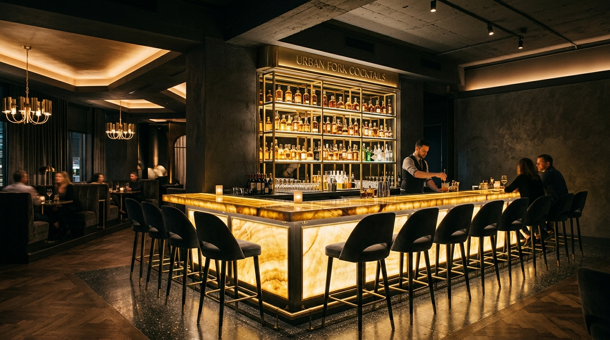
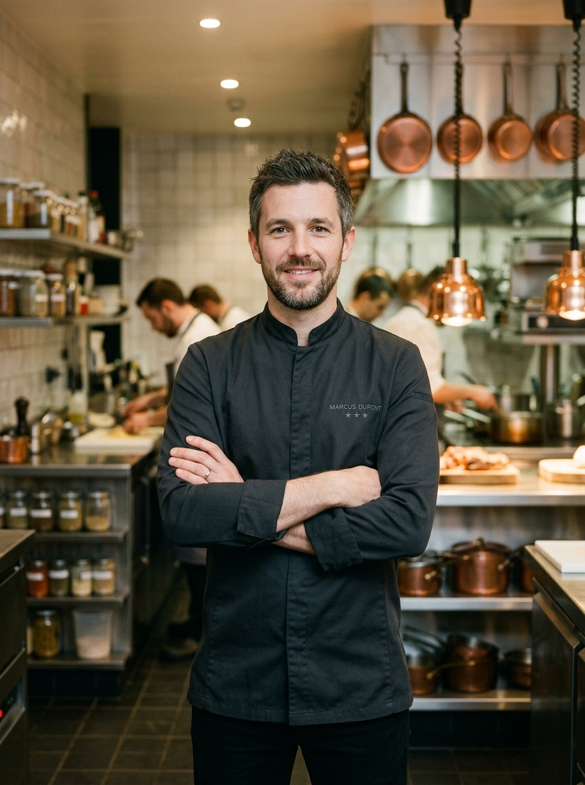
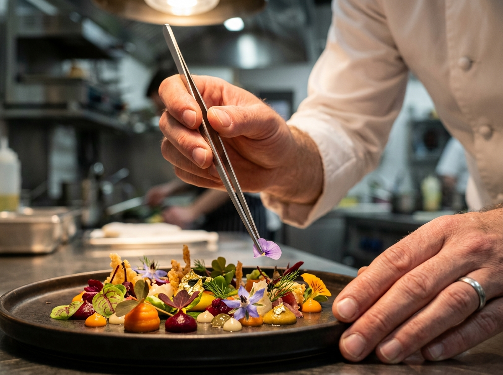

Where Architecture Meets Gastronomy
Conceived as an antidote to frantic city life — a temple of sensory restraint, deliberate warmth, and honest culinary discipline.

Chef Marcus Dupont
"We strip away the extraneous. When you have the finest heirloom leek or cold-water scallop, our role as chefs is reverence, temperature, and nuance."
Born in Lyon and honed in the kitchens of Tokyo and Copenhagen, Marcus Dupont relocated to the United States with a singular thesis: to unite Midwestern agrarian abundance with the architectural rigor of contemporary Nordic-Japanese culinary thought.
Under his direction, Urban Fork has earned two Michelin stars, the James Beard Award for Outstanding Hospitality, and international acclaim for its zero-waste preservation lab, transforming heirloom scraps into delicate vinegars, misos, and fermented garums.

"The plate is an ephemeral canvas; memory is the lasting architecture."
Every ingredient has a lineage. Every table setting is a dialogue between craftsmanship and dining pleasure.
The Three Pillars of Urban Fork
Our commitment to excellence extends far beyond taste — rooted in ethical agriculture, artisanal craft, and intentional environmental stewardship.
Regenerative Sourcing
We partner directly with twenty-two family-operated biodynamic farms within 150 miles. Soil health, heirloom crop resilience, and humane husbandry dictate our daily menu evolutions.
Zero-Waste Fermentation
Our subterranean R&D fermentation lab repurposes every kitchen byproduct. Fish collars become artisanal garum, vegetable trims become cultured misos, and herb stems yield aromatic finishing oils.
Tactile Craftsmanship
From custom charcoal clay dishware wood-fired by local ceramicists to hand-hammered brass cutlery and mouth-blown sommelier stemware, each tactile touchpoint honors human hands.
Milestones in Gastronomy
From an abandoned limestone printing press to Chicago's most celebrated modern dining enclave.
The Architectural Awakening
Acquisition and 18-month meticulous historic restoration of the 1922 Michigan Avenue limestone vault, exposing brutalist concrete ribs and installing bespoke brass lighting.
First Michelin Star
Urban Fork receives its inaugural Michelin Star within 14 months of opening, alongside the Sommelier Guild Award for its 450-bottle cellar program.
Two Stars & Sustainability Laureate
Elevated to Two Michelin Stars. Commissioning of the subterranean zero-waste fermentation lab and certification as a 100% sustainable dining establishment.
Global Chef Collaborative
Launching the Urban Fork Global Residency Series, welcoming world-renowned Michelin-starred visionaries for seasonal four-hands dining collaborations.